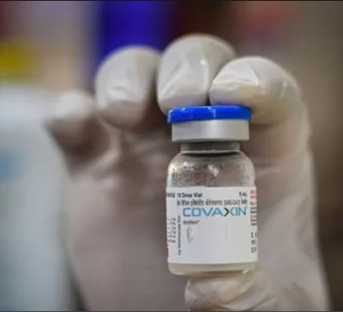
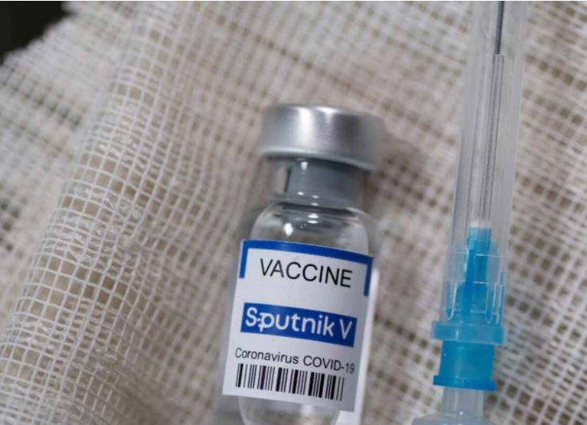

As world is in the midst of a COVID-19 pandemic, countries across the globe are racing to develop and deploy safe and effective vaccines. Vaccines are a critical new tool in the battle against COVID-19 and it is safe to say that safe and effective vaccines are the gamechangers. But, why do we need vaccination? The vaccine reduces your risk of infection. The vaccine protects against severe illness. The vaccine (eventually) will help us ditch the masks. The vaccine will help you reconnect with friends and family. India currently has two vaccines – homegrown Covaxin and Serum Institute of India’s Covishield. Earlier this month, Russia's Sputnik V was also given emergency use authorisation by India's drug regulator.
Covishield® (AstraZeneca's vaccine manufactured by Serum Institute of India)
Covishield® vaccine, manufactured by the Serum Institute of India, is a Viral Vector-based Technology which is also used to manufacture Ebola vaccine. It is based on the same patent technology as the Astrazeneca vaccine.
On The Same Patent Technology As The Astrazeneca Vaccine.
Has Completed Its Phase III Trials In UK And The Bridging Trial In India.
Approved For Use On Individuals 18 Years Of Age And Older.
Requires Two Full Doses With A Gap Of Four-Eight Weeks.
Not To Be Taken By People Severely Allergic To Any Of Its Ingredients.
Covaxin® (manufactured by Bharat Biotech Limited) Covaxin® vaccine, manufactured by the Bharat Biotech, is a Whole-virion Inactivated Coronavirus Vaccine which is also used to manufacture vaccines like Influenza, Rabies and Hepatitis- A. Has completed their Phase I & II trials. Approved and available in India. Made in India. Requires two full doses with a gap of 28 days. Not to be taken by people who have allergies, fever or bleeding disorder, weaker immunity or are on a medicine that affects their immune system. Its first interim data indicates efficacy of 81 percent at a four-week interval between two doses.
The Sputnik V vaccine developed by Russia's Gamelya Center and bankrolled by the Russian government sovereign wealth fund, RDIF, is based on the adenovirus vector platform. Safety: Sputnik V updates from Russia and other countries suggest that the vaccine is safe with mostly mild-to-moderate side effects. Efficacy: Sputnik V data indicates 91.6 percent efficacy, as confirmed by details published in the Lancet. Availability: Approved in India, and is expected to be available from May. To be made in India.
